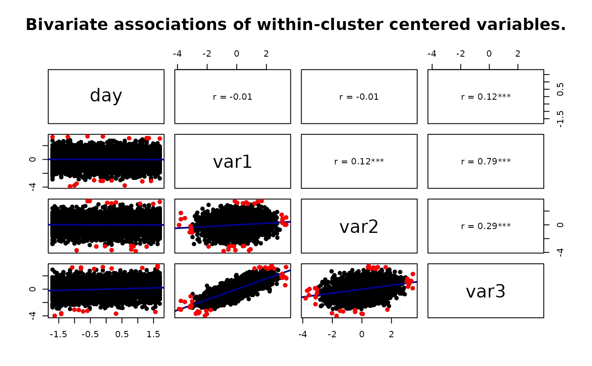
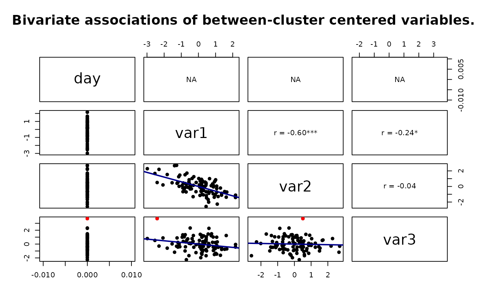

The wbCorr function creates a wbCorr object containing within- and between-cluster correlations, p-values, and confidence intervals for a given dataset and clustering variable. The object can be plotted.
Usage
wbCorr(
data,
cluster,
confidence_level = 0.95,
method = "pearson",
nboot = 1000,
inference = c("analytic", "none", "cluster_bootstrap"),
between_weighting = c("equal_clusters", "cluster_size")
)
wbcorr(
data,
cluster,
confidence_level = 0.95,
method = "pearson",
nboot = 1000,
inference = c("analytic", "none", "cluster_bootstrap"),
between_weighting = c("equal_clusters", "cluster_size")
)Arguments
- data
A dataframe containing numeric variables for which correlations will be calculated.
- cluster
A vector representing the clustering variable or a string with the name of the column in data that contains the clustering variable.
- confidence_level
A numeric value between 0 and 1 representing the desired level of confidence for confidence intervals (default: 0.95).
- method
A string indicating the correlation method to be used. Supported methods are 'pearson', 'spearman', and 'auto' (default: 'pearson'). 'pearson': p-values use t-statistics and confidence intervals use the Fisher z-transformation. 'spearman': p-values and confidence intervals use the Fisher z-transformation. 'auto': uses Spearman for pairs with an ordered factor and Pearson otherwise (reported as point-biserial or phi coefficient for binary variables).
- nboot
Specifies the amount of bootstrap samples (default: 1000).
- inference
A string specifying how p-values and confidence intervals are computed. 'analytic' (default) uses the formulas described under
method. 'cluster_bootstrap' resamples whole clusters and computes bias-corrected (BC) bootstrap confidence intervals and p-values. Unlike the analytic tests, it accounts for dependence within clusters and does not assume normal data. Useset.seed()for reproducible results. 'none' returns the correlation coefficients only.- between_weighting
A string. If 'equal_clusters' (default), every cluster mean is weighted the same in between-cluster correlations, even if some clusters contributed fewer measurement points. If 'cluster_size', cluster means are weighted by the number of observations each cluster has of both variables. These methods will be equivalent in datasets without missing data and an equal number of measurements per cluster.
Value
A wbCorr object that contains within- and between-cluster statistics. Use the get_table() function on the wbCorr object to retrieve a list of the full correlation tables. Use the summary() or get_matrix() function on the wbCorr object to retrieve various correlation matrices, including ICCs in the merged ones. Use get_ICC() to retrieve all intraclass correlations (ICC(1,1)). Finally, use to_excel() on a table or matrix (or list of matrices) to save them.
Details
Calculates bivariate within- and between-cluster correlations for clustered data, such as repeated measures nested in persons, dyads, teams, or other groups. Only recommended for continuous or binary variables.
Inspired by the psych::statsBy function, wbCorr allows you to easily calculate, extract, and plot within- and between-cluster correlations for further analysis.
Each variable is split into its cluster means (between-cluster part) and the deviations from these means (within-cluster part). Cluster means use all available observations of a variable. Each correlation then uses all complete pairs of the two variables.
Within-cluster tests use N - k - 1 degrees of freedom, where N is the number of
complete pairs and k the number of clusters they come from. These tests treat
the deviations as independent, which is an approximation. Between-cluster tests
use k - 2 degrees of freedom. A correlation is NA if there are too few
observations, e.g. fewer than three clusters for between-cluster correlations.
Examples
# importing our simulated example dataset with pre-specified within- and between- correlations
data("simdat_intensive_longitudinal")
# create a wbCorr object:
correlations <- wbCorr(simdat_intensive_longitudinal,
'participantID')
# optionally weight between-cluster correlations by cluster size:
weighted_correlations <- wbCorr(simdat_intensive_longitudinal,
'participantID',
between_weighting = 'cluster_size')
# cluster bootstrap; use more bootstrap samples in applied work:
# \donttest{
bootstrapped_correlations <- wbCorr(simdat_intensive_longitudinal,
'participantID',
inference = 'cluster_bootstrap',
nboot = 100)
# }
# returns a list with full detailed tables of the correlations:
tables <- get_table(correlations) # the get_tables() function is equivalent
print(tables)
#> $within
#> Parameter1 Parameter2 pearson's r t-statistic df 95% CI p
#> 1 day var1 -0.01 -0.64 4899 [-0.04, 0.02] 0.522
#> 2 day var2 -0.01 -0.80 4899 [-0.04, 0.02] 0.424
#> 3 day var3 0.12 8.67 4899 [0.10, 0.15] < .001***
#> 4 var1 var2 0.12 8.53 4899 [0.09, 0.15] < .001***
#> 5 var1 var3 0.79 89.04 4899 [0.78, 0.80] < .001***
#> 6 var2 var3 0.29 21.50 4899 [0.27, 0.32] < .001***
#>
#> $between
#> Parameter1 Parameter2 pearson's r t-statistic df 95% CI p
#> 1 day var1 NA NA 98 [NA, NA] <NA>
#> 2 day var2 NA NA 98 [NA, NA] <NA>
#> 3 day var3 NA NA 98 [NA, NA] <NA>
#> 4 var1 var2 -0.60 -7.46 98 [-0.71, -0.46] < .001***
#> 5 var1 var3 -0.24 -2.43 98 [-0.42, -0.04] 0.017*
#> 6 var2 var3 -0.04 -0.44 98 [-0.24, 0.15] 0.659
#>
# returns a correlation matrix with stars for p-values:
matrices <- summary(correlations) # the get_matrix() and get_matrices() functions are equivalent
print(matrices)
#> $within
#> day var1 var2 var3
#> day 1 -0.01 -0.01 0.12***
#> var1 -0.01 1 0.12*** 0.79***
#> var2 -0.01 0.12*** 1 0.29***
#> var3 0.12*** 0.79*** 0.29*** 1
#>
#> $between
#> day var1 var2 var3
#> day NA NA NA NA
#> var1 NA 1 -0.60*** -0.24*
#> var2 NA -0.60*** 1 -0.04
#> var3 NA -0.24* -0.04 1
#>
#> $merged_wb
#> day var1 var2 var3
#> day [-0.02] -0.01 -0.01 0.12***
#> var1 NA [0.51] 0.12*** 0.79***
#> var2 NA -0.60*** [0.49] 0.29***
#> var3 NA -0.24* -0.04 [0.49]
#>
#> $note_wb
#> [1] "Top-right triangle: Within-correlations. Bottom-left triangle: Between-correlations. Diagonal: ICC"
#>
#> $merged_bw
#> day var1 var2 var3
#> day [-0.02] NA NA NA
#> var1 -0.01 [0.51] -0.60*** -0.24*
#> var2 -0.01 0.12*** [0.49] -0.04
#> var3 0.12*** 0.79*** 0.29*** [0.49]
#>
#> $note_bw
#> [1] "Top-right triangle: Between-correlations. Bottom-left triangle: Within-correlations. Diagonal: ICC"
#>
#> $note
#> [1] "***p < 0.001, **p < 0.01, *p < 0.05"
#>
# Plot the centered variables against each other
plot(correlations, 'within')
#> This may take a while...

plot(correlations, which = 'b')
#> This may take a while...

# Store the list of correlation matrices to excel
to_excel(matrices, path = tempfile(fileext = ".xlsx"))